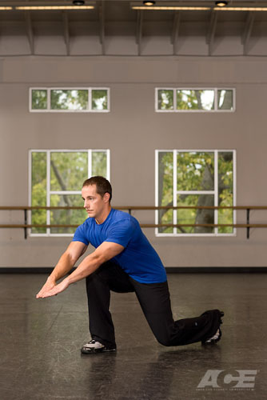

Who doesn't want to think they have super powers? Great stretch as well when you picture trying to touch the opposing walls with your fingers and toes.
Step 1:
Starting Position: Lie on your stomach on a mat or the floor with your legs outstretched behind you. Your toes are pointing toward the wall behind you. Reach your arms out overhead with your palms facing each other.
Relax your neck and align your head with your spine.
Step 2:
Upward Phase: Exhale. Deepen your abdominal and core muscles to stabilize your spine and slowly and strongly reach both legs away from your torso until they lift a few inches off the floor. At the same time float both arms a few inches off the floor. Keep both legs and arms straight and allow any rotation in the arms, legs, shoulders or pelvis. Your head is aligned with your spine. Do not allow your head to lift up or to droop toward the floor. Do not allow the back to arch. Hold this position briefly.
Step 3:
Downward Phase: Gently inhale and lower your legs and arms back to your starting position without any movement in your low back or hips.
Step 1:
Starting Position: Come to a hands and knees position (quadruped) on the mat with your hands directly under your shoulders; fingers facing forward, and knees under your hips. Engage the abdominals and pull the shoulder blades down your back.
Step 2:
Reach one leg out and away followed by the other leg, bringing you to plank position. Keep the abdominals/core engaged to brace the torso. Your head should be aligned with your spine. Your feet are together with your toes tucked under and your heels reaching toward the wall behind you
Step 3:
Downward Phase: Slowly bend the elbows, lowering your body toward the floor. Keep the torso rigid and the head aligned with your spine. Do not allow your low back or ribcage to sag or your hips to hike upward. Engage your glutes (butt) and quadriceps (thigh) muscles to help maintain stability and a rigid body. Try to lower yourself until your chest or chin touch the mat or floor. Your elbows should remain close to the sides of your body or be allowed to flare outwards slightly.
Step 4:
Upward Phase: Straighten the elbows, pressing upward through your arms. Keep the torso rigid and head aligned with your spine. As you straighten the arms, lift your left foot off the floor, keeping the knee straight. Do not allow the hips to rotate as you raise the leg off the floor. Do not allow your low back or ribcage to sag or your hips to hike upward. Continue pressing until the elbows are straight and your left leg is off the floor. Hold this position briefly before returning to your starting position. Repeat the push up alternating legs with each repetition.
Pushing through the heel and outside surface of your palm provides greater force in your press and stability to your shoulders.
Step 1:
Starting Position: Lie on your back on a mat with your knees bent, feet flat on the floor and arms spread out to your sides with your palms facing down. Gently exhale. Engage your abdominal/core muscles to support the spine. Slowly lift your feet off the floor, raising your knees directly above your hips. Bend the knees to 90 degrees. Hold this position and breathe normally. Use your arms as a base of support.
Step 2:
Upward Phase: Exhale, and slowly raise your hips off the mat, rolling your spine up as if trying to bring your knees towards your head. Avoid any change in the angle of your knees during the roll-up. Use your arms and hands to assist with maintaining your balance and continue to curl-up until your spine cannot roll any further. Hold this position briefly.
Step 3:
Downward Phase: Gently inhale. With control, lower your spine and hips back to the start position.
Proper form is important when performing this exercise to prevent excessive stress on your low back. When returning to your starting position during the repetitions, control your leg movement. Do not allow your knees to move past your hips, but instead return to a position directly above your hips. Since the abdominals connect the rib cage to the pelvis, the emphasis of the movement should be on pulling your pelvis upwards towards your rib cage.
Step 1:
Starting Position: Lie on your right side on an exercise mat with your legs straight and the left leg stacked directly on top of the right. Bend the right elbow and place is directly under your shoulder. Align your head with your spine and keep your hips and right knee in contact with the exercise mat.
Step 2:
Upward Phase: Exhale, keep the abdominals engaged to brace your spine. Lift your hips and knees off the mat. The side of your right foot stays in contact with the mat. Keep your head aligned with your spine and your right elbow positioned directly under your shoulder.
Step 3:
Lowering Phase: Inhale and gently return to your starting position. After a prescribed number of repetitions, repeat on the other side.
Step 4:
Exercise Variation: You can increase the intensity of this exercise by (1) increasing the length of time you are in the raised position, (2) raising the upper leg off the lower leg or (3) raising the lower leg off the floor and maintaining contact with your elbow and the foot of the upper leg only.
When raising the upper leg off the lower leg, there is no need to raise it to a level beyond parallel with the floor.

Step 1:
Starting Position: Stand with your feet together, arms raised in front to shoulder height, and elbows straight. Pull your shoulders blades down and back without arching your low back. Brace your abdominal / core muscles to stabilize your spine.
Step 2:
Slowly lift one foot off the floor, balancing on the standing leg. Avoid any sideways tilting or swaying in your upper body and try not to move the standing foot. Hold this position briefly before stepping forward. The raised (swing) leg should contact the floor heel first, slowly shifting your body weight to the front foot. Plant the front foot firmly on the floor. Avoid any sideways tilting or swaying in your upper body and try not to move the foot.
Step 3:
As you lunge forward, focus on dropping your hips downward toward the floor rather than forward. This will help control the amount of forward movement of your shinbone over your foot. Continue lowering your body to a comfortable position or until your front thigh becomes parallel with the floor and your shinbone is in a slight forward lean. As you lunge, bend forward at your hips, reach your arms toward the floor in front of you. Keep your back flat and elbows straight. Your hands are reaching to a point somewhat below your front knee. This increases the load on your gluteal (butt) muscle group.
Step 4:
Firmly push off with your front leg, working your thigh and butt muscles, to return to your upright, starting position.
It is suggested, you first learn how to perform single leg-stands on the ground and forward lunges before progressing to using arm drivers.